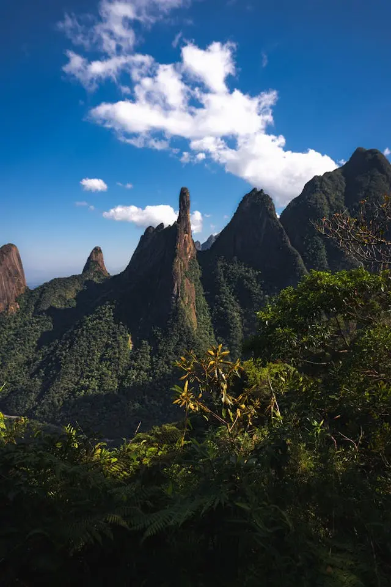

Descubra o Coração Verde do Rio de Janeiro
Explore as belezas naturais, trilhas e a biodiversidade do PARNASO, Parque Montanhas de Teresópolis e Três Picos.
Conhecer os ParquesA Capital Nacional do Montanhismo
Abraçada pela Serra dos Órgãos, Teresópolis é um refúgio para quem busca conexão real com a natureza. Com o ar puro da serra e a maior porção de Mata Atlântica contínua do estado, a cidade é o ponto de partida perfeito para aventuras inesquecíveis.
Aqui, a preservação ambiental e o ecoturismo andam lado a lado, oferecendo trilhas, cachoeiras e mirantes de tirar o fôlego.
